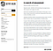

The muse of a system against interruption marketing

Seth as we already know we human beings are most of the time basing our decisions by matching the pattern and by imitating our peers’ decisions because it feels safer for us than

to travel the unknown. if it works for Seth it will work for me and if it’s like almost everybody uses it then I should also. This is the main driver of the shift from us trying to fulfill our needs to us dying for our wants. of course, with an economical system designed with a status story around money and technology that made pattern matching and imitation easier and easier with recommendation systems and the power of filtering and sorting. Amusement makes us forget our pains and fear the effect of delight it provides is way amplified that it should normally be and I guess that the interruption marketers that collaborate with desolated amusements designers that dye to make a living with their art are also knowable about all these concepts I am describing. I do believe that the trend is reversible but we should acknowledge the fact that they old the tech power and money also. If we start with this small number of people and if we do the work with empathy and care the wind will be in our back and we see the effect of all these behavioral habits work for us and together we drip by drip will make everything better because everybody merits better.
was writing about Intel when I interrupted myself to make a search about Professor Clayton Christensen’s daughter then ended in twitter, saw this article and decided to write and publish this one which is of the same concept as this and this